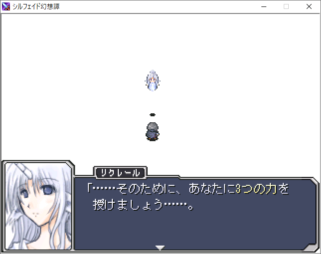

■2021-05-12 (水) シルフェイド幻想譚リファイン！▼
ということで、突然ですが懐かしの『シルフェイド幻想譚』をリファインしました！
やったのは「ほぼ全ての人間キャラ」の顔グラフィックの修正です。
さすがに初めて描いたとき（2004年）から17年、
公開後からのカウントでも16年も経ってしまったのでこの辺で美容整形！
絵の差し替えだけなら後からしやすいので、いつかやりたいとは思っていました。
たぶんちょっとかわいくなった2人↓


【ダウンロード】
ということで、ダウンロードはこちらから！
↓
【シルフェイド幻想譚 Ver1.31のダウンロード（Vectorへ）】
以下のように、タイトルの右下に「2005 - UPDATE 2021」と出ていればリファイン版です！

いまだに新しくプレイしてくださる方がいらっしゃるようで、本当に感謝の限りです！
おかげさまで、長年の積み重ねで総ダウンロード数は最低でも50万以上に達しています。
自慢の1本！
【コンテストパーク受賞時の記事！】
あとインターネットアーカイブで『コンテストパーク 名誉の殿堂』の
『シルフェイド幻想譚』の記事がありましたのでご紹介！
もう元のページがないので貴重な記事です！
https://web.archive.org/web/20060208043401/http://www.enterbrain.co.jp/techwin/data/contents/cpd/silfeid.html

用意されたレールをなぞるRPGではなく、
「遊ぶ人それぞれにとってそれぞれの物語があるRPGにできればいいな」
ということを徹底的に意識しました。
とコメントにありますが、いま見るとその目標に関しては、
けっこうがんばって作れたのかなあという感触があります。
TRPG好きマンとしては、「自分で参加している感」はすごく大事にしたいと思ってました。
とはいえ、「絶対面白いよこういうRPG！ 遊んでみたい！」
と思って必死で作ってみたものの、
実際に作者（私）が遊んでみると面白さを感じられなくて
ちょっぴり切なくなったのはいい思い出です。
いやだって、このゲームの「全部ネタバレしてる状態の面白さ」って、
もう「噛みすぎて味のなくなったスルメ」くらいの味しかしないんですよ！
「いったい何が面白かったのか」を私だけ体験できなかったので、
今度作るときはなんというか、もう少し喜びを感じやすい形を
工夫して作れたらいいなと思います。
そういう意味だと、片道勇者みたいな『ローグライク』は
私自身も楽しく遊べて、作ってて幸せなジャンルの一つですね！
でもそこは置いといて、
また『シルフェイド幻想譚』みたいなRPGを作るのも面白そうです。
でもいまどき、昔ながらの2DのRPGとか遊ばれる人はいらっしゃいますかね？
有料ゲーム置き場でウディタやツクールっぽい昔ながらの2D RPGの画面を見て
テンションが上がる人はもう絶滅しているような気もする今日この頃です。
うまいこと見せ方を変えたものならインディーゲームとしても割といけるかも？
何はともあれ、今は目の前の新作開発です！
まだまだ時間がかかりそうですががんばっていきます。